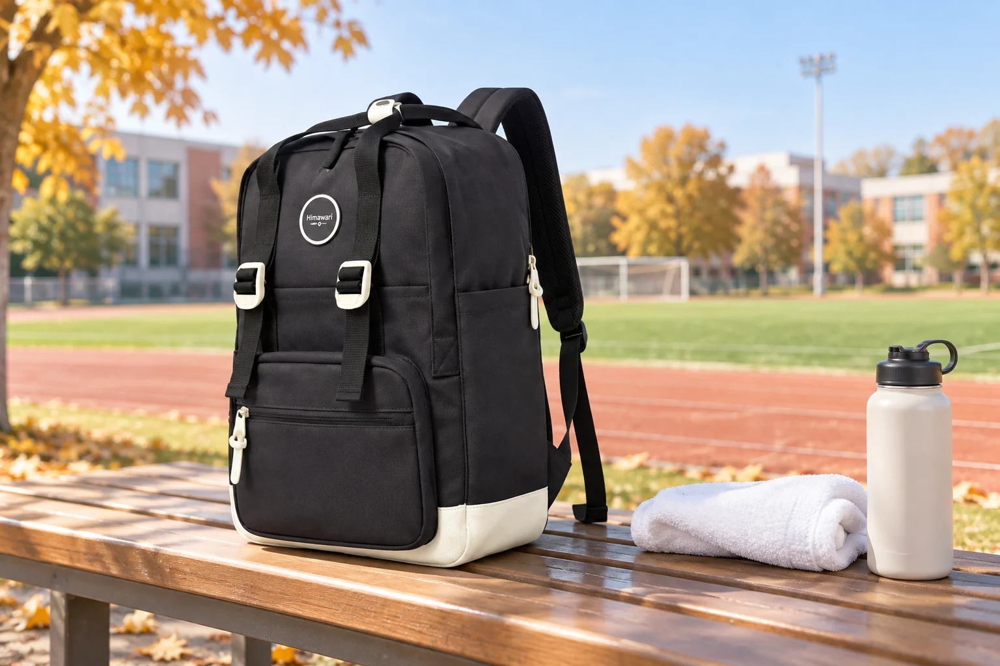
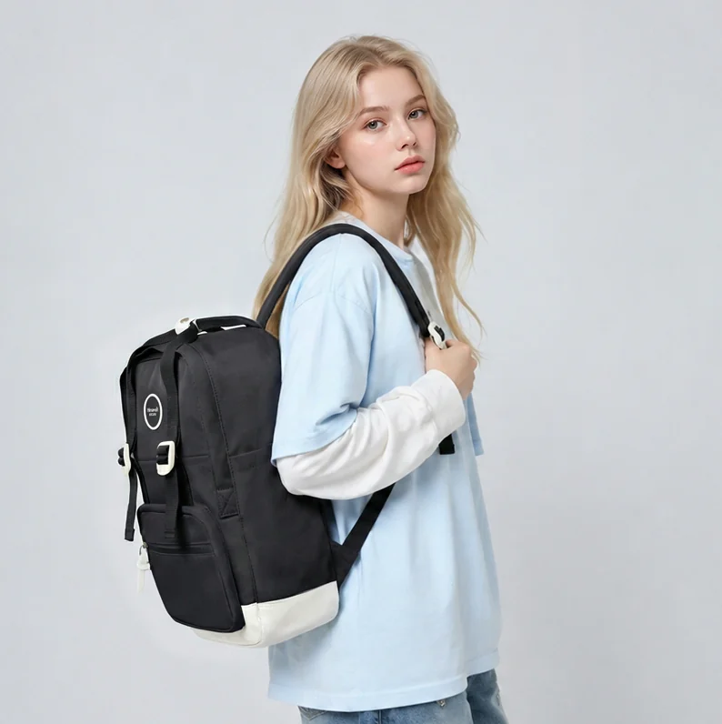

체육행사 날의 책가방은 돌아오는 짐까지 생각하기

학교 체육행사가 있는 날에는 평소의 책가방에 활동 준비물이 더해질 수 있습니다. 이때 필요한 것은 긴 목록을 모두 담는 일보다 학교가 안내한 하루의 흐름을 읽는 일입니다. 수업을 하고 운동장으로 나가는 날인지, 행사 장소로 바로 가는 날인지에 따라 가져갈 교재와 꺼낼 물건이 달라집니다. 귀가 때 사용한 물건이 돌아갈 자리까지 함께 정해봅니다.
학교 안내문과 시간표를 나란히 놓고 평소와 달라진 항목만 표시합니다. 신발이나 여벌 옷이 필요한지, 개인 물병이나 간식을 가져가도 되는지 실제 안내를 봅니다. 다른 학교의 준비 목록을 그대로 가져오면 허용되지 않는 물건까지 늘어날 수 있습니다. 모호한 항목은 안내된 문의 방법으로 확인하고, 아직 모르는 것은 준비가 끝난 것으로 표시하지 않습니다.
아이가 찾을 수 있는 묶음
준비물을 가방에 넣기 전에 아이와 함께 펼쳐봅니다. 무엇을 어느 시간에 쓸지 짧게 이야기하고 실제로 넣고 꺼내보세요. 보호자가 보기에는 잘 정돈된 가방이어도 아이가 지퍼 위치를 모르거나 묶음 이름을 이해하지 못하면 운동장에서 찾기 어렵습니다. 오늘 추가된 물건부터 한 번씩 확인하면 평소 수업 짐과 구분할 수 있습니다.
활동 때 먼저 쓸 것은 실제로 꺼낼 수 있는 자리를 정합니다. 모자나 손수건이 필요하다면 깊숙이 넣기 전에 아이가 손이 닿는지 봅니다. 별도 주머니를 쓰는 경우에는 그 주머니를 여는 방식도 확인합니다. 여러 새 파우치를 한꺼번에 더하기보다 처음 필요한 묶음 하나로 시작하면 이름과 위치를 기억할 내용이 줄어듭니다.
수업 자료는 그대로 있어야 하는지 시간표에 맞춰봅니다. 행사가 있다고 필요한 교재까지 빼지 않고, 그날 쓰지 않을 것으로 확인한 것만 덜어냅니다. 필통과 노트의 위치를 바꾸었다면 아이에게 같이 알려주세요. 익숙한 책가방을 그대로 쓸 때도 안의 배치가 바뀌면 준비할 동작은 달라집니다. 넣은 뒤 책과 활동 물건을 각각 꺼내보면 순서를 확인할 수 있습니다.
학교 외출의 제품 자료로 Himawari No.1088M을 함께 소개합니다. 이 날의 가방 선택은 행사를 위해 새 제품을 사는 일보다 현재 쓰는 가방으로 필요한 묶음을 찾을 수 있는지에서 시작할 수 있습니다. 아이가 사용할 물건을 넣고 꺼내는 모습을 보고 위치를 조정하세요. 제품 이름으로 어떤 준비물이 모두 들어갈지 정할 필요는 없습니다.

사용한 물건을 다시 담을 자리
여벌 양말이나 수건을 챙겼다면 깨끗한 상태로 갈 때와 사용한 뒤의 상태를 나누어봅니다. 흙이나 물기가 묻었을 때 교재와 닿지 않게 임시로 담을 주머니를 정할 수 있습니다. 아이에게는 그 주머니가 무엇을 넣는 곳인지 알려주세요. 빈 주머니가 남아 있다는 사실만으로 올바르게 사용한 물건을 담을 수 있다고 생각하지 않습니다.
물병은 사용하는 용기의 안내에 맞게 닫고 다른 종이 물건과 맞닿는 위치를 살펴봅니다. 학교에서 정한 보관 방법이 있다면 그 방법을 따릅니다. 행사 중 가방과 물병을 서로 다른 곳에 두었다면 활동을 끝낸 뒤 함께 회수해야 합니다. 이름 표시가 필요한 경우에는 학교 안내에 맞춰 하고, 밖에 개인정보를 크게 드러내지 않는 방식도 고려합니다.
돌아오는 짐을 예상할 때 배부물을 반드시 받는다고 가정할 필요는 없습니다. 다만 옷을 갈아입거나 소지품을 다시 넣는 과정에서 출발 때와 접는 모양이 달라질 수 있습니다. 집에서 꽉 맞게 넣은 배치를 아이가 현장에서 그대로 복원해야 하는지 생각해보세요. 쉽게 되담을 방법을 택하면 정돈된 모양보다 동작이 단순한 구성이 됩니다.
활동이 끝난 자리부터 집까지
행사장에서는 학교가 정한 보관 위치를 따릅니다. 통로나 출입구를 막지 않도록 두고, 다른 친구의 물건과 함께 있는 상황에서는 자신의 것을 확인합니다. 활동을 마친 뒤에는 앉았던 자리와 물병을 둔 곳을 차례로 봅니다. 아이가 기억하기 쉽도록 실제로 물건을 놓은 지점을 함께 돌아보는 순서를 정할 수 있습니다.
교실로 돌아왔을 때는 활동용 물건과 수업 자료가 뒤섞이지 않았는지 확인할 시간이 필요할 수 있습니다. 학교의 진행에 맞춰 필요한 것을 정리하고 가져갈 개인 물건을 챙깁니다. 보호자가 미리 모든 상황을 지시하기보다 안내된 방식 안에서 아이가 확인할 부분을 정해두는 편이 낫습니다. 집에서 연습했던 주머니 이름과 현장의 물건이 이어져야 합니다.
귀가 후에는 사용한 주머니부터 꺼내 함께 살펴봅니다. 젖거나 오염된 물건은 각 제품의 관리 안내에 맞춰 정리하고 가방 안에 남겨두지 않습니다. 교재나 필기구가 다시 돌아왔는지도 확인합니다. 빠진 물건이 있으면 마지막으로 둔 장소를 떠올리고 학교의 안내에 따라 문의할 내용을 정합니다. 처음부터 분실이라고 단정하기 전에 남아 있을 위치를 확인하세요.
다음 체육행사를 위한 기록은 쓰지 않은 물건과 찾기 어려웠던 묶음 정도면 됩니다. 일반 목록을 길게 보관하는 것보다 그날의 안내에서 무엇이 달랐는지 남길 수 있습니다. 아이가 직접 꺼내기 어려웠던 주머니는 다음번에 바꾸고, 편하게 되담았던 묶음은 이어서 써봅니다. 행사 다음날에는 평소 수업 가방의 배치로 다시 정리해 시간표에 맞는 짐을 준비합니다.